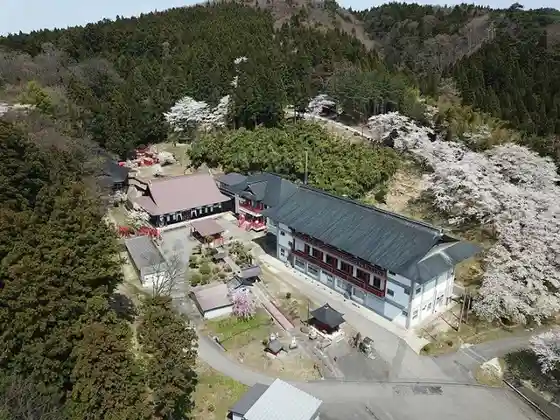
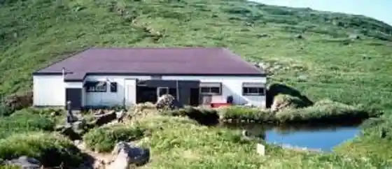
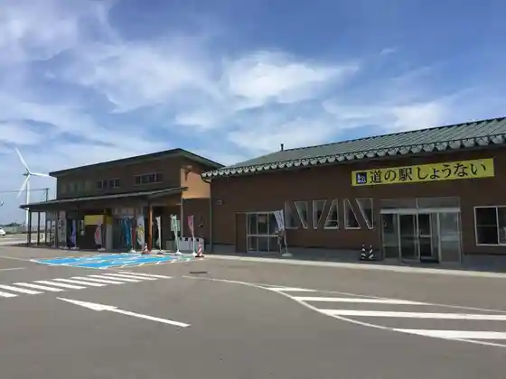
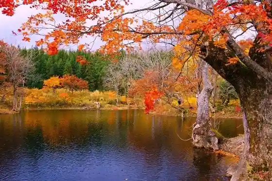

Gassan Shrine
Shonai, Yamagata · 090-8921-9151 · Official / source link
Shirogitsune Yama Hikari Hoshi Tera (Soto Shu) / Shonai Sanju San Kannon Dai 6 Ban
Shonai, Yamagata · 0234-56-2533 · Official / source link

Gassan Hotoke Nama Ike Koya (Gassan Kyu Gome)
Shonai, Yamagata · 090-8783-9555 · Official / source link

Roadside Station Shonai Fusha Market
Shonai, Yamagata · 0234-56-3039 · Official / source link

Tsurumaki Ike
Shonai, Yamagata · 0234-59-2137 · Official / source link

Basho Joriku no Chi
Shonai, Yamagata · 0234-57-2211 · Official / source link
Katosoreiyu Saijo Kawa
Shonai, Yamagata · 0234-42-2282 · Official / source link
Kiyokawa Hachiro Memorial Museum
Shonai, Yamagata · 0234-57-2104 · Official / source link
Haguro Kodo
Shonai, Yamagata · 0234-56-2213 · Official / source link
Kiyokawa Shrine
Shonai, Yamagata · 0234-57-2104 · Official / source link
Banzai Yama Rei Iwa Tera (Soto Shu) / Shonai Sanju San Kannon Dai 24 Ban
Shonai, Yamagata · 0234-56-2141 · Official / source link
Kiyokawa Hachiro no Bohi
Shonai, Yamagata · 0234-57-2104 · Official / source link
Shonai Gyararii Onsen Machi Yu
Shonai, Yamagata · Official / source link
Kiyokawa Rekishi Park Kiyokawa Sekisho
Shonai, Yamagata · 0234-25-5885 · Official / source link
Roku Fuchi Se Ba Sabo Entei
Shonai, Yamagata · 0234-56-2213 · Official / source link
Gatsu no Sawa Onsen Kita Gassan So
Shonai, Yamagata · 0234-59-2137 · Official / source link
Kenryo Tera
Shonai, Yamagata · Official / source link
Amarume Hachiman Shrine
Shonai, Yamagata · 0234-42-2922 · Official / source link
Tateyama Park
Shonai, Yamagata · 0234-56-2217 · Official / source link
Koide Numa no Village Park
Shonai, Yamagata · 0234-42-2922 · Official / source link
Shonai Shinsan Gyo Sozo Kan Kurasse
Shonai, Yamagata · 0234-43-6486 · Official / source link
O Sho Oji Shrine
Shonai, Yamagata · 0234-57-2630 · Official / source link
Sabo Museum (Kokudo Kotsu Sho Tachiya Sawakawa Sabo Shutchosho Nai)
Shonai, Yamagata · 0234-56-2050 · Official / source link
Uindomu Tachikawa Lookout
Shonai, Yamagata · 0234-56-3361 · Official / source link
Ken Matsurigoto Tera
Shonai, Yamagata · Official / source link
Naito Shu In Suisaiga Memorial Museum
Shonai, Yamagata · 0234-43-3039 · Official / source link
Karikawa Hachiman Shrine
Shonai, Yamagata · 0234-42-2922 · Official / source link
Kanki Tera
Shonai, Yamagata · 0234-57-2134 · Official / source link
Kame no O no Sato Museum
Shonai, Yamagata · 0234-44-2162 · Official / source link
Futsu Ta no Jizo no Matsu (Ken Shitei Bunkazai)
Shonai, Yamagata · 0234-42-2922 · Official / source link
Kumagaya Shrine
Shonai, Yamagata · 0234-59-2204 · Official / source link
Kangun Fumbo
Shonai, Yamagata · 0234-42-2922 · Official / source link
Baishi Yama Jo Yoshi Tera (Soto Shu) / Shonai Sanju San Kannon Dai 14 Ban
Shonai, Yamagata · 0234-42-3410 · Official / source link
Matsu Iwa Tera
Shonai, Yamagata · 0234-43-3566 · Official / source link
Ue Asa Maruhachi Hata Shrine
Shonai, Yamagata · Official / source link
Bonten Tsuka Burial Mound (Machi Shitei Bunkazai)
Shonai, Yamagata · Official / source link
Kitadate Daigaku Haka
Shonai, Yamagata · 0234-43-2211 · Official / source link
Kitakan Shrine
Shonai, Yamagata · 0234-56-2322 · Official / source link
Shirafuji Yama Masa Toin
Shonai, Yamagata · 0234-59-2103 · Official / source link
Choryu Yama Zenkoji (Soto Shu) / Shonai Sanju San Kannon Dai 3 Ban
Shonai, Yamagata · 0234-56-2533 · Official / source link
Tohoku Shizen Hodo
Shonai, Yamagata · 0234-42-2922 · Official / source link